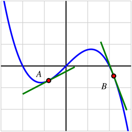
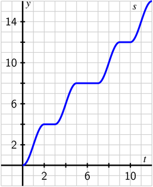
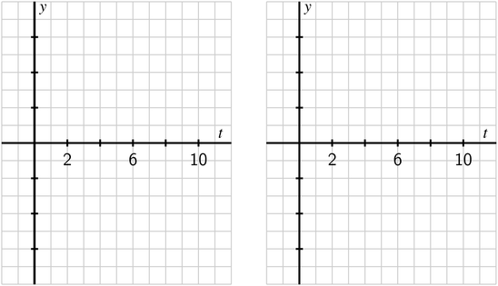
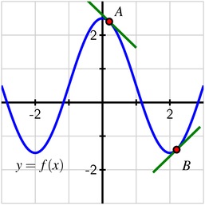
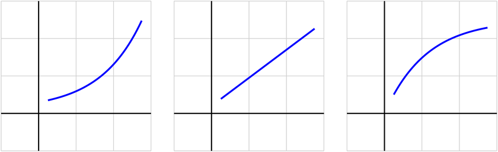
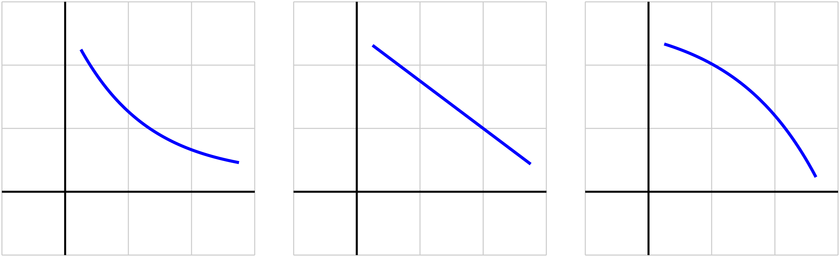
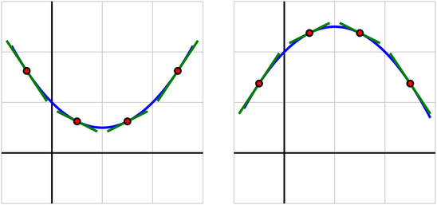
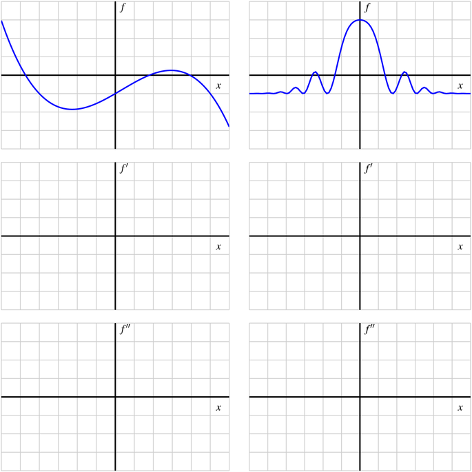
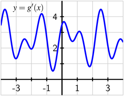

{In this section, we strive to understand the ideas generated by the following important questions:
How does the derivative of a function tell us whether the function is increasing or decreasing at a point or on an interval?
What can we learn by taking the derivative of the derivative (to achieve the second derivative) of a function \(f\)?
What does it mean to say that a function is concave up or concave down? How are these characteristics connected to certain properties of the derivative of the function?
What are the units on the second derivative? How do they help us understand the rate of change of the rate of change?
}
Subsection1.6.1Introduction
Given a differentiable function \(y= f(x)\), we know that its derivative, \(y = f'(x)\), is a related function whose output at a value \(x=a\) tells us the slope of the tangent line to \(y = f(x)\) at the point \((a,f(a))\). That is, heights on the derivative graph tell us the values of slopes on the original function's graph. Therefore, the derivative tells us important information about the function \(f\).
Figure1.6.1Two tangent lines on a graph demonstrate how the slope of the tangent line tells us whether the function is rising or falling, as well as whether it is doing so rapidly or slowly.
At any point where \(f'(x)\) is positive, it means that the slope of the tangent line to \(f\) is positive, and therefore the function \(f\) is increasing (or rising) \knownindex{\lt main>increasing\lt /main>} at that point. Similarly, if \(f'(a)\) is negative, we know that the graph of \(f\) is decreasing \knownindex{\lt main>decreasing\lt /main>} (or falling) at that point.
In the next part of our study, we work to understand not only whether the function \(f\) is increasing or decreasing at a point or on an interval, but also how the function \(f\) is increasing or decreasing. Comparing the two tangent lines shown in Figure 1.6.1, we see that at point \(A\), the value of \(f'(x)\) is positive and relatively close to zero, which coincides with the graph rising slowly. By contrast, at point \(B\), the derivative is negative and relatively large in absolute value, which is tied to the fact that \(f\) is decreasing rapidly at \(B\). It also makes sense to not only ask whether the value of the derivative function is positive or negative and whether the derivative is large or small, but also to ask “how is the derivative changing?”
We also now know that the derivative, \(y = f'(x)\), is itself a function. This means that we can consider taking its derivative – the derivative of the derivative – and therefore ask questions like “what does the derivative of the derivative tell us about how the original function behaves?” As we have done regularly in our work to date, we start with an investigation of a familiar problem in the context of a moving object.
Preview Activity
The position of a car driving along a straight road at time \(t\) in minutes is given by the function \(y = s(t)\) that is pictured in Figure 1.6.2. The car's position function has units measured in thousands of feet. For instance, the point \((2,4)\) on the graph indicates that after 2 minutes, the car has traveled 4000 feet.
Figure1.6.2The graph of \(y = s(t)\), the position of the car (measured in thousands of feet from its starting location) at time \(t\) in minutes.
In everyday language, describe the behavior of the car over the provided time interval. In particular, you should carefully discuss what is happening on each of the time intervals \([0,1]\), \([1,2]\), \([2,3]\), \([3,4]\), and \([4,5]\), plus provide commentary overall on what the car is doing on the interval \([0,12]\).
On the lefthand axes provided in Figure 1.6.3, sketch a careful, accurate graph of \(y = s'(t)\).
What is the meaning of the function \(y = s'(t)\) in the context of the given problem? What can we say about the car's behavior when \(s'(t)\) is positive? when \(s'(t)\) is zero? when \(s'(t)\) is negative?
Rename the function you graphed in (b) to be called \(y = v(t)\). Describe the behavior of \(v\) in words, using phrases like “\(v\) is increasing on the interval \(\ldots\)” and “\(v\) is constant on the interval \(\ldots\).”
Sketch a graph of the function \(y = v'(t)\) on the righthand axes provide in Figure 1.6.3. Write at least one sentence to explain how the behavior of \(v'(t)\) is connected to the graph of \(y=v(t)\).
Figure1.6.3Axes for plotting \(y = v(t) = s'(t)\) and \(y = v'(t)\).
Subsection1.6.2Increasing, decreasing, or neither
When we look at the graph of a function, there are features that strike us naturally, and common language can be used to name these features. In many different settings so far, we have intuitively used the words increasing and decreasing to describe a function's graph. Here we connect these terms more formally to a function's behavior on an interval of input values.
Definition1.6.4
Given a function \(f(x)\) defined on the interval \((a,b)\), we say that \(f\) is increasing on \((a,b)\) provided that for all \(x\), \(y\) in the interval \((a,b)\), if \(x \lt y\), then \(f(x) \lt f(y)\). Similarly, we say that \(f\) is decreasing on \((a,b)\) provided that for all \(x\), \(y\) in the interval \((a,b)\), if \(x \lt y\), then \(f(x) > f(y)\).
Simply put, an increasing function is one that is rising as we move from left to right along the graph, and a decreasing function is one that falls as the value of the input increases. For a function that has a derivative at a point, we will also talk about whether or not the function is increasing or decreasing at that point. Moreover, the fact of whether or not the function is increasing, decreasing, or neither at a given point depends precisely on the value of the derivative at that point.
{
Let \(f\) be a function that is differentiable at \(x = a\). Then \(f\) is increasing at \(x = a\) if and only if \(f'(a) > 0\) and \(f\) is decreasing at \(x = a\) if and only if \(f'(a) \lt 0\). If \(f'(a) = 0\), then we say \(f\) is neither increasing nor decreasing at \(x = a\).
}
Figure1.6.5A function that is decreasing at \(A\), increasing at \(B\), and more generally, decreasing on the intervals \(-3 \lt x \lt -2\) and \(0 \lt x \lt 2\) and increasing on \(-2 \lt x \lt 0\) and \(2 \lt x \lt 3\).
For example, the function pictured in Figure 1.6.5 is increasing at any point at which \(f'(x)\) is positive, and hence is increasing on the entire interval \(-2 \lt x \lt 0\). Note that at both \(x = \pm 2\) and \(x = 0\), we say that \(f\) is neither increasing nor decreasing, because \(f'(x) = 0\) at these values.
Subsection1.6.3The Second Derivative
\knownindex{\lt main>second derivative\lt /main>}
For any function, we are now accustomed to investigating its behavior by thinking about its derivative. Given a function \(f\), its derivative is a new function, one that is given by the rule
Because \(f'\) is itself a function, it is perfectly feasible for us to consider the derivative of the derivative, which is the new function \(y = [f'(x)]'\). We call this resulting function the second derivative\knownindex{\lt main>second derivative\lt /main>} of \(y = f(x)\), and denote the second derivative by \(y = f''(x)\).
Due to the presence of multiple possible derivatives, we will sometimes call \(f'\) “the first derivative” of \(f\), rather than simply “the derivative” of \(f\). Formally, the second derivative is defined by the limit definition of the derivative of the first derivative:
We note that all of the established meaning of the derivative function still holds, so when we compute \(y = f''(x)\), this new function measures slopes of tangent lines to the curve \(y = f'(x)\), as well as the instantaneous rate of change of \(y = f'(x)\). In other words, just as the first derivative measures the rate at which the original function changes, the second derivative measures the rate at which the first derivative changes. This means that the second derivative tracks the instantaneous rate of change of the instantaneous rate of change of \(f\). That is, the second derivative will help us to understand how the rate of change of the original function is itself changing.
Subsection1.6.4Concavity
In addition to asking whether a function is increasing or decreasing, it is also natural to inquire how a function is increasing or decreasing. To begin, there are three basic behaviors that an increasing function can demonstrate on an interval, as pictured in Figure 1.6.6: the function can increase more and more rapidly, increase at the same rate, or increase in a way that is slowing down. Fundamentally, we are beginning to think about how a particular curve bends, with the natural comparison being made to lines, which don't bend at all. More than this, we want to understand how the bend in a function's graph is tied to behavior characterized by the first derivative of the function.
Figure1.6.6Three functions that are all increasing, but doing so at an increasing rate, at a constant rate, and at a decreasing rate, respectively.
For the leftmost curve in Figure 1.6.6, picture a sequence of tangent lines to the curve. As we move from left to right, the slopes of those tangent lines will increase. Therefore, the rate of change of the pictured function is increasing, and this explains why we say this function is increasing at an increasing rate. For the rightmost graph in Figure 1.6.6, observe that as \(x\) increases, the function increases but the slope of the tangent line decreases, hence this function is increasing at a decreasing rate.
Of course, similar options hold for how a function can decrease. Here we must be extra careful with our language, since decreasing functions involve negative slopes, and negative numbers present an interesting situation in the tension between common language and mathematical language. For example, it can be tempting to say that “\(-100\) is bigger than \(-2\).” But we must remember that when we say one number is greater than another, this describes how the numbers lie on a number line: \(x \lt y\) provided that \(x\) lies to the left of \(y\). So of course, \(-100\) is less than \(-2\). Informally, it might be helpful to say that “\(-100\) is more negative than \(-2\).” This leads us to note particularly that when a function's values are negative, and those values subsequently get more negative, the function must be decreasing.
Now consider the three graphs shown in Figure 1.6.7. Clearly the middle graph demonstrates the behavior of a function decreasing at a constant rate. If we think about a sequence of tangent lines to the first curve that progress from left to right, we see that the slopes of these lines get less and less negative as we move from left to right. That means that the values of the first derivative, while all negative, are increasing, and thus we say that the leftmost curve is decreasing at an increasing rate.
Figure1.6.7From left to right, three functions that are all decreasing, but doing so in different ways.
This leaves only the rightmost curve in Figure 1.6.7 to consider. For that function, the slope of the tangent line is negative throughout the pictured interval, but as we move from left to right, the slopes get more and more negative. Hence the slope of the curve is decreasing, and we say that the function is decreasing at a decreasing rate.
This leads us to introduce the notion of concavity \knownindex{\lt main>concavity\lt /main>} which provides simpler language to describe some of these behaviors. Informally, when a curve opens up on a given interval, like the upright parabola \(y = x^2\) or the exponential growth function \(y = e^x\), we say that the curve is concave up on that interval. Likewise, when a curve opens down, such as the parabola \(y = -x^2\) or the opposite of the exponential function \(y = -e^{x}\), we say that the function is concave down. This behavior is linked to both the first and second derivatives of the function.
In Figure 1.6.8, we see two functions along with a sequence of tangent lines to each. On the lefthand plot where the function is concave up, observe that the tangent lines to the curve always lie below the curve itself and that, as we move from left to right, the slope of the tangent line is increasing. Said differently, the function \(f\) is concave up on the interval shown because its derivative, \(f'\), is increasing on that interval. Similarly, on the righthand plot in Figure 1.6.8, where the function shown is concave down, there we see that the tangent lines alway lie above the curve and that the value of the slope of the tangent line is decreasing as we move from left to right. Hence, what makes \(f\) concave down on the interval is the fact that its derivative, \(f'\), is decreasing.
Figure1.6.8At left, a function that is concave up; at right, one that is concave down.
We state these most recent observations formally as the definitions of the terms concave up and concave down.
Definition1.6.9
Let \(f\) be a differentiable function on an interval \((a,b)\). Then \(f\) is concave up \knownindex{\lt main>concave up\lt /main>} on \((a,b)\) if and only if \(f'\) is increasing on \((a,b)\); \(f\) is concave down \knownindex{\lt main>concave down\lt /main>} on \((a,b)\) if and only if \(f'\) is decreasing on \((a,b)\).
The following activities lead us to further explore how the first and second derivatives of a function determine the behavior and shape of its graph. We begin by revisiting Preview Activity .
The position of a car driving along a straight road at time \(t\) in minutes is given by the function \(y = s(t)\) that is pictured in Figure 1.6.11. The car's position function has units measured in thousands of feet. Remember that you worked with this function and sketched graphs of \(y = v(t) = s'(t)\) and \(y = v'(t)\) in Preview Activity .
Figure1.6.11The graph of \(y = s(t)\), the position of the car (measured in thousands of feet from its starting location) at time \(t\) in minutes.
On what intervals is the position function \(y = s(t)\) increasing? decreasing? Why?
On which intervals is the velocity function \(y = v(t) = s'(t)\) increasing? decreasing? neither? Why?
Acceleration \knownindex{\lt main>acceleration\lt /main>} is defined to be the instantaneous rate of change of velocity, as the acceleration of an object measures the rate at which the velocity of the object is changing. Say that the car's acceleration function is named \(a(t)\). How is \(a(t)\) computed from \(v(t)\)? How is \(a(t)\) computed from \(s(t)\)? Explain.
What can you say about \(s''\) whenever \(s'\) is increasing? Why?
Using only the words increasing, decreasing, constant, concave up, concave down, and linear, complete the following sentences. For the position function \(s\) with velocity \(v\) and acceleration \(a\),
on an interval where \(v\) is positive, \(s\) is .
on an interval where \(v\) is negative, \(s\) is .
on an interval where \(v\) is zero, \(s\) is .
on an interval where \(a\) is positive, \(v\) is .
on an interval where \(a\) is negative, \(v\) is .
on an interval where \(a\) is zero, \(v\) is .
on an interval where \(a\) is positive, \(s\) is .
on an interval where \(a\) is negative, \(s\) is .
Remember that a function is increasing on an interval if and only if its first derivative is positive on the interval and that \(v(t) = s'(t)\).
See (a), and note that \(v'(t) = s''(t)\).
Remember that the first derivative of a function measures its instantaneous rate of change, so \(s''(t)\) measures the instantaneous rate of change of \(v(t) = s'(t)\).
Note that \(s''(t) = [s'(t)]'\), so \(s''(t)\) is the slope of the tangent line to \(y = s'(t)\).
Be very careful with your letters: \(s\), \(v\), and \(a\). For instance, note that when acceleration is positive, velocity must be increasing.
The position function \(y = s(t)\) increasing on the intervals \(0\lt t\lt 2\), \(3\lt t\lt 5\), \(7\lt t\lt 9\), and \(10\lt t\lt 12\), because at every point in such intervals, \(s'(t)\) is positive. For the provided function, \(s(t)\) is never decreasing because its derivative is never negative.
The velocity function \(y = v(t)\) appears to be increasing on the intervals \(0\lt t\lt 1\), \(3\lt t\lt 4\), \(7\lt t\lt 8\), and \(10\lt t\lt 11\) because the curve \(y = s(t)\) is concave up which corresponds to an increasing first derivative \(y =s'(t)\). Similarly, \(y = v(t)\) appears to be decreasing on the intervals \(1\lt t\lt 2\), \(4\lt t\lt 5\), \(8\lt t\lt 9\), and \(11\lt t\lt 12\) because the curve \(y = s(t)\) is concave down which corresponds to a decreasing first derivative \(y =s'(t)\). On the intervals \(2\lt t\lt 3\), \(5\lt t\lt 7\), and \(9\lt t\lt 10\), the curve \(y = s(t)\) is constant, and thus linear, so neither concave up nor concave down.
Since \(a(t)\) is the instantaneous rate of change of \(v(t)\), \(a(t) = v'(t)\). And because \(v(t) = s'(t)\), it follows that \(a(t) = v'(t) = [s'(t)]' = s''(t)\), so acceleration is the second derivative of position.
Because \(s''(t)\) is the first derivative of \(s'(t)\), when \(s'(t)\) is increasing, \(s''(t)\) must be positive.
For the position function \(s(t)\) with velocity \(v(t)\) and acceleration \(a(t)\),
on an interval where \(v(t)\) is positive, \(s(t)\) is increasing.
on an interval where \(v(t)\) is negative, \(s(t)\) is decreasing.
on an interval where \(v(t)\) is zero, \(s(t)\) is constant.
on an interval where \(a(t)\) is positive, \(v(t)\) is increasing.
on an interval where \(a(t)\) is negative, \(v(t)\) is decreasing.
on an interval where \(a(t)\) is zero, \(v(t)\) is constant.
on an interval where \(a(t)\) is positive, \(s(t)\) is concave up.
on an interval where \(a(t)\) is negative, \(s(t)\) is concave down.
on an interval where \(a(t)\) is zero, \(s(t)\) is linear.
The context of position, velocity, and acceleration is an excellent one in which to understand how a function, its first derivative, and its second derivative are related to one another. In Activity 1.6.10, we can replace \(s\), \(v\), and \(a\) with an arbitrary function \(f\) and its derivatives \(f'\) and \(f''\), and essentially all the same observations hold. In particular, note that \(f'\) is increasing if and only if both \(f\) is concave up, and similarly \(f'\) is increasing if and only if \(f''\) is positive. Likewise, \(f'\) is decreasing if and only if both \(f\) is concave down, and \(f'\) is decreasing if and only if \(f''\) is negative.
A potato is placed in an oven, and the potato's temperature \(F\) (in degrees Fahrenheit) at various points in time is taken and recorded in the following table. Time \(t\) is measured in minutes. In Activity 1.5.4, we computed approximations to \(F'(30)\) and \(F'(60)\) using central differences. Those values and more are provided in the second table below, along with several others computed in the same way.
Use a central difference to estimate the value of \(F''(30)\).
What is the meaning of the value of \(F''(30)\) that you have computed in (b) in terms of the potato's temperature? Write several careful sentences that discuss, with appropriate units, the values of \(F(30)\), \(F'(30)\), and \(F''(30)\), and explain the overall behavior of the potato's temperature at this point in time.
Overall, is the potato's temperature increasing at an increasing rate, increasing at a constant rate, or increasing at a decreasing rate? Why?
Remember that the derivative's units are “units of output per unit of input.”
To estimate \(g'(a)\), we can use
\[
g'(a) \approx \frac{g(a+h)-g(a-h)}{2h}
\]
for an appropriate choice of \(h\).
For each of the values \(F'(30)\) and \(F''(30)\), think about what they tell you about expected upcoming behavior in \(F(t)\) and \(F'(t)\), respectively.
Remember that the derivative's units are “units of output per unit of input.”
To estimate \(g'(a)\), we can use
\[
g'(a) \approx \frac{g(a+h)-g(a-h)}{2h}
\]
for an appropriate choice of \(h\). So, observe that
\[
F''(a) \approx \frac{F'(a+h)-F'(a-h)}{2h}
\]
For each of the values \(F'(30)\) and \(F''(30)\), think about what they tell you about expected upcoming behavior in \(F(t)\) and \(F'(t)\), respectively. What do you expect to be the values of \(F(31)\) and \(F'(31)\)? Why?
Examine the given data and think about how the graph of \(y = F(t)\) will appear.
\(F'(t)\) has units measured in degrees Fahrenheit per minute.
Using a central difference,
\[
F''(30) \approx \frac{F'(45)-F'(15)}{30} = \frac{2.45-6.03}{30} \approx -0.119.
\]
The value \(F''(30) \approx -0.119\), which is measured in degrees per minute per minute tells us, along with the other data, that at the moment \(t = 30\), the temperature of the potato is 251 degrees, that its temperature is rising at a rate of 3.85 degrees per minute, and that the rate at which the temperature is rising is falling at a rate of -0.119 degrees per minute per minute. That is, while the temperature is rising, it is rising at a slower and slower rate. At \(t = 31\), we'd expect that the rate of increase of the potato's temperature would have dropped to about 3.73 degrees per minute.
The potato's temperature increasing at a decreasing rate because the values of the first derivative of \(F\) are falling. Equivalently, this is because the value of \(F''(t)\) is negative throughout the given time interval.
This activity builds on our experience and understanding of how to sketch the graph of \(f'\) given the graph of \(f\).
Figure1.6.14Two given functions \(f\), with axes provided for plotting \(f'\) and \(f''\) below.
In Figure 1.6.14, given the respective graphs of two different functions \(f\), sketch the corresponding graph of \(f'\) on the first axes below, and then sketch \(f''\) on the second set of axes. In addition, for each, write several careful sentences in the spirit of those in Activity 1.6.10 that connect the behaviors of \(f\), \(f'\), and \(f''\). For instance, write something such as
\(f'\) is \hspace{1.5in} on the interval \hspace{0.5in}, which is connected to the fact that \(f\) is \hspace{1.5in} on the same interval \hspace{0.5in}, and \(f''\) is \hspace{1.5in} on the interval as well
but of course with the blanks filled in. Throughout, view the scale of the grid for the graph of \(f\) as being \(1 \times 1\), and assume the horizontal scale of the grid for the graph of \(f'\) is identical to that for \(f\). If you need to adjust the vertical scale on the axes for the graph of \(f'\) or \(f''\), you should label that accordingly.
HintRemember that to plot \(y = f'(x)\), it is helpful to first identify where \(f'(x) = 0.\)HintRemember that to plot \(y = f'(x)\), it is helpful to first identify where \(f'(x) = 0\), and then ask where \(y = f'(x)\) is positive and negative. In a similar way, once \(y = f'(x)\) has been plotted, to construct the graph of \(y=f''(x)\), it is useful to note where the slope of the tangent line to \(y = f'(x)\) is zero, as well as where such slopes are positive and negative. Heights on the graph of \(y = f''(x)\) will correspond to slopes on \(y = f'(x)\).Solution
The graphs of \(f'\) and \(f''\) are plotted in Figure ***.
\begin{authornote}
This is an author note.
\end{authornote}
\item A differentiable function \(f\) is increasing at a point or on an interval whenever its first derivative is positive, and decreasing whenever its first derivative is negative.
\item By taking the derivative of the derivative of a function \(f\), we arrive at the second derivative, \(f''\). The second derivative measures the instantaneous rate of change of the first derivative, and thus the sign of the second derivative tells us whether or not the slope of the tangent line to \(f\) is increasing or decreasing.
\item A differentiable function is concave up whenever its first derivative is increasing (or equivalently whenever its second derivative is positive), and concave down whenever its first derivative is decreasing (or equivalently whenever its second derivative is negative). Examples of functions that are everywhere concave up are \(y = x^2\) and \(y = e^x\); examples of functions that are everywhere concave down are \(y = -x^2\) and \(y = -e^x\).
\item The units on the second derivative are “units of output per unit of input per unit of input.” They tell us how the value of the derivative function is changing in response to changes in the input. In other words, the second derivative tells us the rate of change of the rate of change of the original function.
\hrulefill
\begin{exercises}
\item Suppose that \(y = f(x)\) is a differentiable function for which the following information is known: \(f(2) = -3\), \(f'(2) = 1.5\), \(f''(2) = -0.25\).
Is \(f\) increasing or decreasing at \(x = 2\)? Is \(f\) concave up or concave down at \(x = 2\)?
Do you expect \(f(2.1)\) to be greater than \(-3\), equal to \(-3\), or less than \(-3\)? Why?
Do you expect \(f'(2.1)\) to be greater than \(1.5\), equal to \(1.5\), or less than \(1.5\)? Why?
Sketch a graph of \(y = f(x)\) near \((2,f(2))\) and include a graph of the tangent line.
\item For a certain function \(y = g(x)\), its derivative is given by the function pictured in Figure 1.6.15.
Figure1.6.15The graph of \(y = g'(x)\).
What is the approximate slope of the tangent line to \(y = g(x)\) at the point \((2,g(2))\)?
How many real number solutions can there be to the equation \(g(x) = 0\)? Justify your conclusion fully and carefully by explaining what you know about how the graph of \(g\) must behave based on the given graph of \(g'\).
On the interval \(-3 \lt x \lt 3\), how many times does the concavity of \(g\) change? Why?
Use the provided graph to estimate the value of \(g''(2)\).
\item A bungee jumper's height \(h\) (in feet ) at time \(t\) (in seconds) is given in part by the data in the following table:
Use the given data to estimate \(h'(4.5)\), \(h'(5)\), and \(h'(5.5)\). At which of these times is the bungee jumper rising most rapidly?
Use the given data and your work in (a) to estimate \(h''(5)\).
What physical property of the bungee jumper does the value of \(h''(5)\) measure? What are its units?
Based on the data, on what approximate time intervals is the function \(y = h(t)\) concave down? What is happening to the velocity of the bungee jumper on these time intervals?
\item For each prompt that follows, sketch a possible graph of a function on the interval \(-3 \lt x \lt 3\) that satisfies the stated properties.
\(y = f(x)\) such that \(f\) is increasing on \(-3 \lt x \lt 3\), \(f\) is concave up on \(-3 \lt x \lt 0\), and \(f\) is concave down on \(0 \lt x \lt 3\).
\(y = g(x)\) such that \(g\) is increasing on \(-3 \lt x \lt 3\), \(g\) is concave down on \(-3 \lt x \lt 0\), and \(g\) is concave up on \(0 \lt x \lt 3\).
\(y = h(x)\) such that \(h\) is decreasing on \(-3 \lt x \lt 3\), \(h\) is concave up on \(-3 \lt x \lt -1\), neither concave up nor concave down on \(-1 \lt x \lt 1\), and \(h\) is concave down on \(1 \lt x \lt 3\).
\(y = p(x)\) such that \(p\) is decreasing and concave down on \(-3 \lt x \lt 0\) and \(p\) is increasing and concave down on \(0 \lt x \lt 3\).